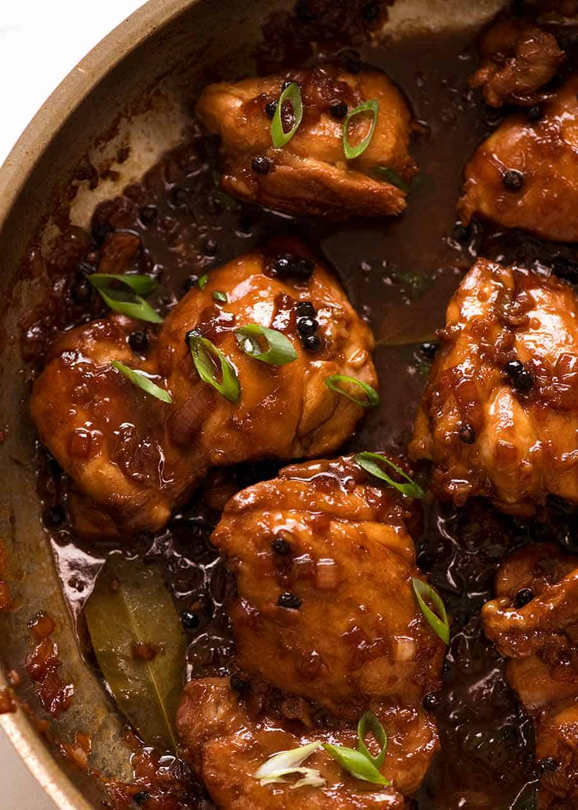

Chicken Adobo

Description
Adobo is one of the most popular dishes from the Philippines. This dish can be made with different proteins like pork and beef, but this recipe will focus on a chicken variation.
The key to this recipe is finding the right balance of soy sauce, vinegar, black pepper, and sugar where each ingredient blends together in a flavorful glaze.
Ingredients
For Chicken and Marinade:
- 1.5-2 lb chicken thighs (about 6), boneless and skinless
- 3 garlic cloves, minced
- 1/3 cup soy sauce, ordinary all-purpose or light (not dark soy sauce)
- 1/3 cup + 2 tbsp white vinegar
- 4 bay leaves (fresh) or 3 dried
For Cooking:
- 2 tbsp oil, separated (vegetable, canola, or peanut)
- 3 garlic cloves, minced
- 1 small brown onion, diced
- 1 1/2 cups water
- 2 tbsp brown sugar
- 1 tbsp whole black peppercorns (sub 2 tsp coarse cracked pepper)
For Serving:
2 green onions/scallions, sliced (garnish)
Steps
- Combine chick and marinade ingredients in a bowl. Marinate for at least 20 minutes, or overnight.
- Heat 1 tbsp oil in a skillet over high head. Remove chicksn from marinade (reserve marinade) and place in the pan. Sear both sides until browned - about 1 minute on each side. Do not cook the chicken al lthe way through.
- Remove chicken skillet and set aside.
- Heat the remaining oil in skillet. Add garlic and onion, cook for 1 1/2 minutes.
- Add the reserved marinade, water, sugar, and black pepper. Bring it to a simmer then turn heat down to medium high. Simmer 5 minutes.
- Add chicken, smooth side down. Simmer uncovered for 20-25 minutes (no need to stir), turning chicken at around 15 minutes, until the sauce reduces down to a thick jam-like syrup.
- If the sauce isn't thick enouch, remove chicken onto a plate and let the sauce simmer by itself - it will thicken much quicker - then return chicken to the skillet to coat in the glaze.
- Coat chicken in glaze then serve over rice.